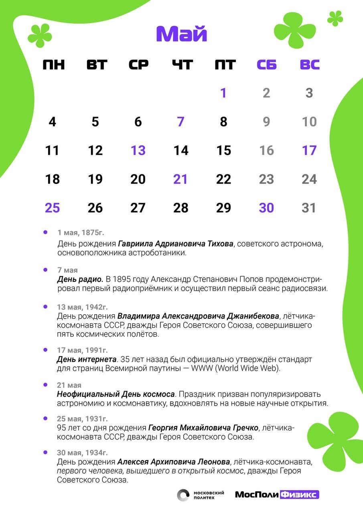
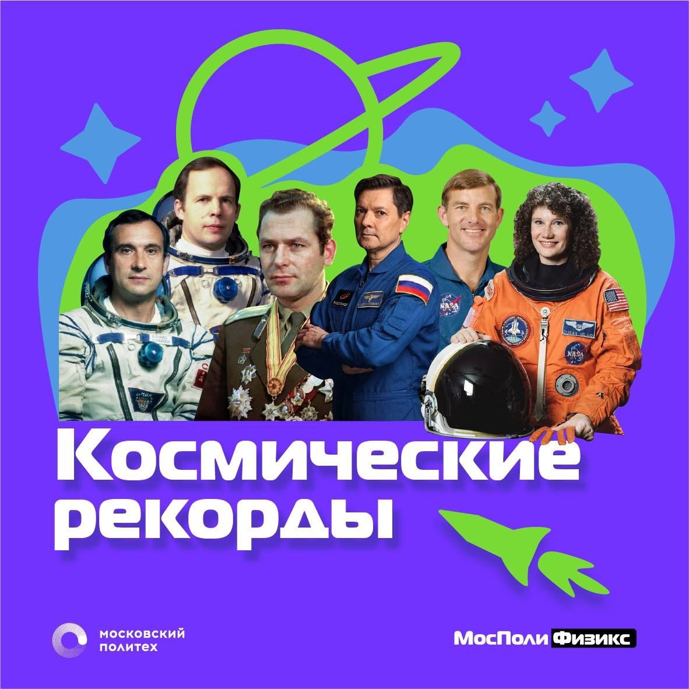

21 мая 2026
Завершен Физический Календарь на май
Календарь осветил важные даты в мае связанные с физикой и космосом

Календарь осветил важные даты в мае связанные с физикой и космосом

Выпустили специальные тематические посты в том числе и новости, посвященный физике космических полетов. Графические материалы были размещены на наших медиа-площадках в Telegram и ВКонтакте для привлечения новой целевой аудитории.

Составлен документ, который поможет распределить работу на дальнейшее время.